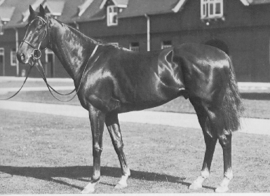

|
|
|

It's no secret to those who examine pedigrees that sire lines rise and fall. There are a number of reasons for this from market popularity to the need for an infusion of new blood. However, when this swing occurs - say to Bold Ruler, then to Northern Dancer, then to Mr. Prospector and so forth - we should not be so enthusiastic in embracing the new line that there is nothing left of the valuable old ones. Now some folks will tell you that we don't really lose these lines, they are still found in pedigrees, which is true. Nonetheless, one would like to see some variety in the stallion register and sales catalogues. It would be refreshing to see more Prince Rose blood, more Tourbillon blood, more Son-In-Law blood and yes, more Hyperion blood. Because he's one of the last great ones we are about to lose. Some horses truly become legends in their own time and some are honestly loved and no horse fits this description better than Hyperion. We re-told a portion of his story in our article on Selene (Pedlines Nov. 1996), so we will not dwell on it, but simply recap. So tiny as a yearling that it was necessary to built a special feed box for him, Hyperion nearly was gelded because of his size. But his sire Gainsborough was a Triple Crown winner and the best sire of his time and his dam, Selene, was good enough as a runner that some pundits of the day suggested she could have beaten colts in the Epsom Derby and she would become a legend in the stud giving us *Sickle, *Pharamond II, Hunter's Moon and All Moonshine in addition to Hyperion. A tremendously lazy workhorse, Hyperion had the mildest of tempers and kept his energy reserved for big races like the Epsom Derby, which he won by four lengths in the then-record time of 2:34 and the St. Leger, which he won by three lengths despite the lack of a prep race. He was also precocious enough to set a five-furlong record at two in the New Stakes. If he was somewhat suspect over cup distances with severe weight burdens at four, it was never held against him, perhaps a hint of what was to come in the way of breeders' thinking.
With this record of pedigree and performance, Hyperion retired to the Derby stud and made a remarkable record. He was leading sire six times - from 1940-42 and again in 1945-46 and 1956. Overall, he was among the top ten 16 times and was twice leading broodmare sire. Americans were eager to obtain his blood and this they did in the form of such horses as *Heliopolis, *Khaled and *Alibhai. Later, his daughter Lady Angela would foal a horse named Nearctic who would, in turn, sire Northern Dancer. One would think that this remarkable record would mean continued success for all time. Hyperion's overall record was, in fact, far better than Nearco's own. Yet in looking at today’s “grey pages” in The Blood Horse stallion directory, one finds not a single line of Hyperion blood. Of course there may be a handful of such sires in regional markets, but they will not see enough mares to matter anyhow. The story of Hyperion used to be far different in other parts of the world. In Australia where Star Kingdom reigned, his blood seemed assured of a permanent role. Yet today, open a sire book from that part of the world and one finds a saturation of Danehill blood. In Europe, a handful of lines remain via sires like Cadeaux Genereux and Puissance, horses like Bahamian Bounty and Mind Games. But one wonders how long they will hold on against the Northern Dancer onslaught. It is likewise in all other parts of the world, even South America where *Forli was born. Today, South American pedigrees often look more American than some regional lines we come across. And oddly enough, Good Manners, who was Nashua-line (a line that did not breed on in tail-male in the U. S.) was all the rage not so long ago. So far as the Hyperion situation in the U. S. is concerned, *Forli simply failed to establish a very strong sire line, though the early death of his wonderfully bred son Intrepid Hero did not help anything. *Khaled’s best son Swaps was better known as a broodmare sire than as a sire of stallions and neither *Alibhai nor *Heliopolis got any major sons, though *Alibhai’s line did rather well in Maryland via Preakness winner Deputed Testamony. Aside from *Forli (by Aristophanes by Hyperion) and *Vaguely Noble (by Vienna by Aureole by Hyperion), both of which have pretty much died out (the latter most sadly via Exceller), Nodouble was probably the strongest Hyperion-line horse in the U. S. and he, of course, was by Noholme II by Hyperion’s wonderful Star Kingdom. Nodouble actually headed the U. S. sire list in 1981, but he was moved around during his stud career and no one made a really concerted effort to get him the kinds of mares that make a sire (i.e. mares from important ‘sire source’ families like *Boudoir II and *Rough Shod II). He also was not an attractive horse like *Forli, and lacked his brilliance, being considered something of a hard knocker (his nickname was “the Arkansas Traveler”). Oddly enough, the very toughness that made him popular as a racehorse was held against him at stud. As for us, we always wanted to see a Thatch-line horse or a Sing Sing-line horse tried out in the U. S., but no one ever showed much interest, so that idea died out somewhere between our ears. There was a lovely Mummy’s Pet horse in California named Mister Wonderful, but he was pretty much ignored. A brilliant racehorse, and a gorgeous physical specimen, we will always feel he was wasted. Of course there is normally a reason why a sire line peters out in any part of the world and Hyperion's link is so tenuous that we have to look at his own pedigree. We see at once that while Hyperion is classified a brilliant/classic Chef by Steven Roman, that he is in all probability mis-classified and should be a pure classic sire. The major Hyperion-line horses that have stood in the U. S. in recent memory are a mixed lot: Noholme II was classified brilliant/classsic; *Khaled intermediate; *Heliopolis brilliant. On the other hand, *Alibhai and *Forli were classified classic and Vaguely Noble was classic/professional. There are some pedigree authorities that suggest that once a son has diverted from his sire line to either faster or more classic waters then the influence of his sire no longer matters. We beg to disagree, certainly when that sire is as widely represented in pedigrees as a horse like Hyperion. Are we to believe that the very fast Tudor Minstrel line can overcome five or six crosses of Hyperion himself? We don't think so. So it once more comes down to pedigree composition and Hyperion is in a lot of pedigrees more than once. Now if that horse happens to have two crosses of *Heliopolis on two crosses of Tudor Minstrel-line Sing Sing, that speed will likely come through. But if it is a mixed bag, and there are four or more crosses, some via daughters, we must consider that Hyperion's own classic bent will be felt. For this is a horse whose pedigree is loaded with the blood of Galopin, Sterling and Pocahontas, and who has only two lines of Bend Or. It is not the pedigree of a sprinter, nor did he run or sire like one. Consider 1998 Kentucky Derby and Preakness winner Real Quiet, whose dosage numbers were over the "magic 4.00" dictated by Roman. In the pedigree of this colt are three very important lines of Hyperion, sex-balanced via Lady Angela to the excellent sires Stardust and *Alibhai. We feel his female family, Boudoir II, is what won two classics for him, but three sex-balanced lines of Hyperion, two of them contributed by his dam, certainly didn't hurt. Pedlines has spent a fair share of time discussing the lack of diversity of our sire lines. We feel that we have gone too far toward what one excellent analyst jokingly calls the "Phalaris Disease". We've been feeling it in every area of the sport. It was one thing for Secretariat to retire at three because of the tax pressures associated with Chris Chenery's estate. It is quite another when the majority of our classic horses never return at four. Hyperion alone, or *Princequillo or Son-In-Law is not the answer. But giving the stud book some variety via the best of these lines can only help revitalize a breed that is getting tired and oh-so-fragile. If variety is the spice of life, then variety is the life of the Thoroughbred. There have been many great stories told about Hyperion, from Lord Derby drinking the last of his favorite Napoleon brandy upon the horse's death to the old stallion getting so interested in a mare during a walk-on performance at age 29 that it was necessary to dim the lights. But we'll repeat our favorite for those who have not read it. The commentary is credited to Tom Forest: "Hyperion is a horse I only met once, and never saw race. But that brazen bantam cock told me everything about his whole career, on the track and at stud, in the outrageous swagger with which he stepped out of his box at Stanley House. Well over 20 years old at that time, sway-backed and swollen-bellied, with tear tracks down from his fading old eyes, he was not a sorry sight at all. He was the indefatigable trouper, the star, the champ...the greatest. "He was racing's price of showmen who claimed his crown in 1933 and flaunted its splendour to every available audience to the day he died. If there is one horse it would break my heart never to have seen, this is the one." How can the Thoroughbred world let such a heritage die? One need only remember Forego or Dahlia or Swaps to know that we should not. That, indeed, we dare not.
Ellen Parker's Hyperion story originally appeared in Pedlines #40, April 1999, and has been updated for the website |